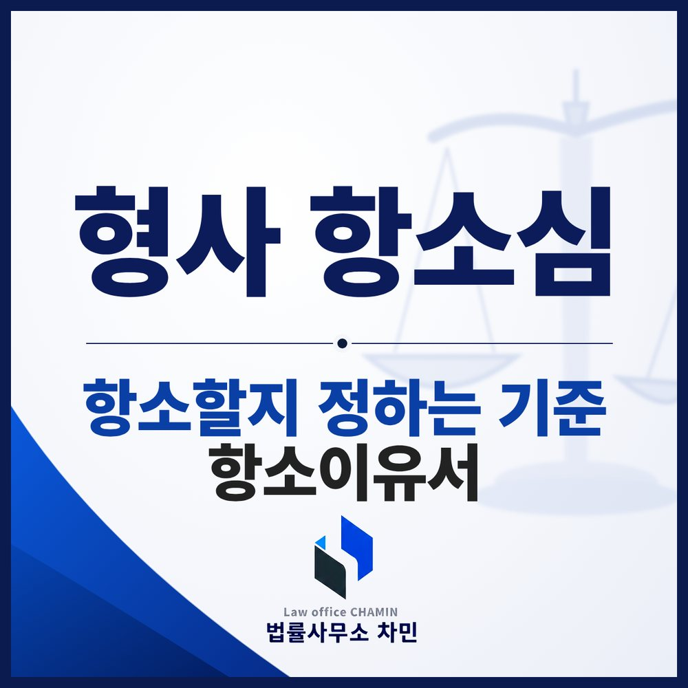

핵심 답변
항소심은 1심을 처음부터 다시 하는 절차가 아닙니다. 1심이 놓친 것을 서면으로 정확히 짚는 것이 핵심입니다.
1심 판결을 받고 나면 항소를 할지 말지 고민하게 됩니다. 판결문을 다시 보면 내가 한 주장에 대한 판단이 빠져 있거나 중요한 쟁점이 다뤄지지 않은 경우도 있습니다. 형사 항소심이 어떻게 진행되고 무엇을 준비해야 하는지 정리했습니다.

항소심은 1심을 바로잡는 절차
항소심은 1심이 진행된 것을 전제로 그 잘못을 바로잡는 절차입니다. 1심에서 한 것을 처음부터 다시 하지 않으므로, 1심에서 이미 신문한 증인을 다시 불러 더 묻고 싶다는 요청은 잘 받아들여지지 않습니다. 이미 한 번 내려진 판결이 바뀌기는 쉽지 않다는 점을 알고 시작하는 것이 현실적입니다.
항소할 수 있는 이유
항소이유는 법에 정해져 있습니다(형사소송법 제361조의5). 실무에서 주로 쓰는 것은 세 가지입니다.
- 사실오인 — 하지 않은 일을 했다고 인정하는 등 사실을 잘못 인정해 판결에 영향을 미친 경우
- 법리오해 — 법을 잘못 해석하거나 적용한 경우
- 양형부당 — 선고된 형이 지나치게 무거운 경우
기한 — 항소 7일, 항소이유서 20일
판결 선고일부터 7일 안에 1심 법원에 항소장을 내야 합니다(같은 법 제358조). 항소장에는 불복한다는 취지만 간단히 적으면 됩니다. 기록이 항소법원으로 넘어가 소송기록 접수 통지를 받으면, 그날부터 20일 안에 항소이유서를 내야 합니다(같은 법 제361조의3). 이 두 기한을 넘기면 다시 기회를 얻기 어렵습니다. 익산 사건의 1심이 전주지방법원 군산지원 단독판사였다면 항소심은 대개 전주지방법원 합의부에서 진행됩니다.
결국 서면 싸움
항소심 기일은 많지 않은 경우가 많습니다. 첫 기일에 항소이유를 진술하고, 추가로 조사할 것이 없으면 변론을 마친 뒤 다음 기일에 선고하는 식입니다. 그래서 항소이유서가 사실상 승부처입니다. 억울한 사정을 길게 나열하기보다 1심 판결이 무엇을 놓쳤는지를 기록에 근거해 짚어야 합니다. 판결문이 짧게 “여러 사정을 종합하여”로 끝나는 경우도 많으므로, 판결문뿐 아니라 증거기록과 공판기록 전체를 다시 검토해 판결에 반영되지 않은 사정을 찾아야 합니다.
검사 항소와 불이익변경금지
피고인만 항소했거나 피고인을 위해 항소한 사건에서는 1심보다 무거운 형을 선고할 수 없습니다(같은 법 제368조). 검사도 항소했다면 항소심은 형을 가볍게도 무겁게도 정할 수 있습니다. 검사가 항소했다고 해서 피고인도 반드시 항소해야 하는 것은 아니며, 1심 판결이 부당한지를 기준으로 판단하면 됩니다. 항소를 취하하면 같은 사건에 다시 항소할 수 없다는 점도 기억하세요(같은 법 제354조). 피해자에게는 항소권이 없으므로, 피해자가 1심 결과에 불만이 있다면 검사에게 항소를 요청해야 합니다.
판결 뒤 달라진 사정
1심 선고 뒤 피해자와 합의가 되었다면 1심이 고려할 수 없었던 사정이므로 항소심에서 의미 있게 반영될 수 있습니다. 반면 구속된 뒤 더 깊이 반성하게 되었다는 사정은 누구에게나 비슷하게 주장되는 것이라 그것만으로 결과를 바꾸기는 어렵습니다. 검사 항소에 대비하는 방법은 검사 항소 대비 칼럼에서 다뤘습니다.